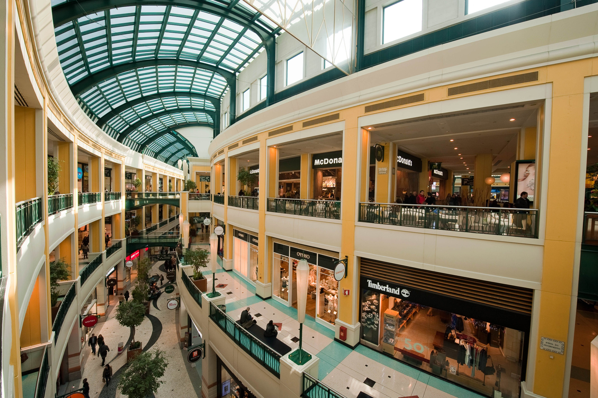
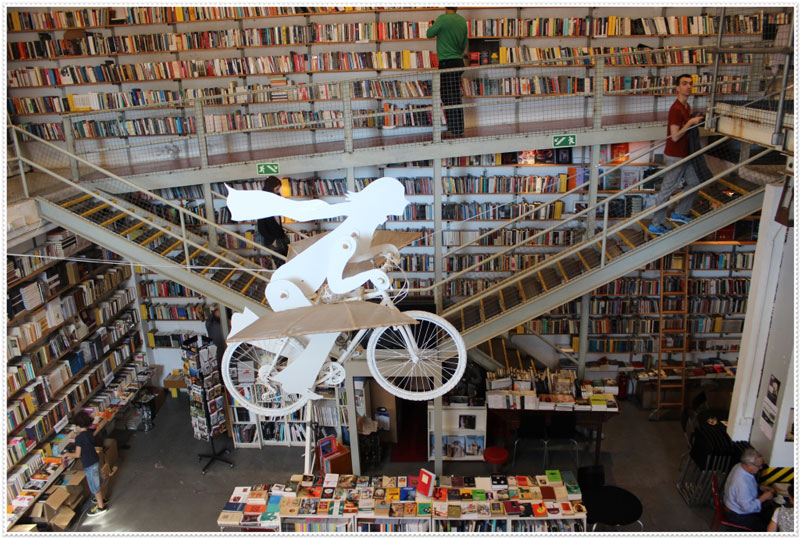

Lisbon Shopping & Local Markets
Discover lively vintage flea markets, artisan design hubs, traditional food markets, and major shopping centers in Lisbon.

Mega Shopping CenterCentro Comercial Colombo
One of the largest shopping malls on the Iberian Peninsula, featuring over 300 stores (Primark, Zara, FNAC), a giant food court, cinema, and hypermarket.
- Av. Lusíada, 1500-392 Lisboa (Direct Metro access: Colégio Militar)
- Free Entry

Creative Concept StoresLX Factory
A revamped industrial complex turned into an indie creative village with unique design boutiques, vintage shops, art galleries, and the world-famous Ler Devagar bookstore.
- R. Rodrigues de Faria 103, Alcântara, Lisbon
- Free Entry
 High Street
Shopping
High Street
Shopping
Rua Augusta & Chiado
Lisbon’s primary pedestrian shopping boulevard and historic district, packed with major flagship stores like Zara, Mango, Pandora, and Pull&Bear, alongside historic cafes and street performers.
- Rua Augusta & Chiado, Baixa, Lisbon
- Free Access
Erasmus Local Tip
Feira da Ladra takes place only on Tuesdays and Saturdays (from 8 AM to 3 PM). Arrive around 9:00 AM for the best vintage clothing and retro camera finds before the crowds arrive! For cheap everyday clothes, Centro Colombo has a huge multi-floor Primark right at the Metro stop Colégio Militar/Luz.